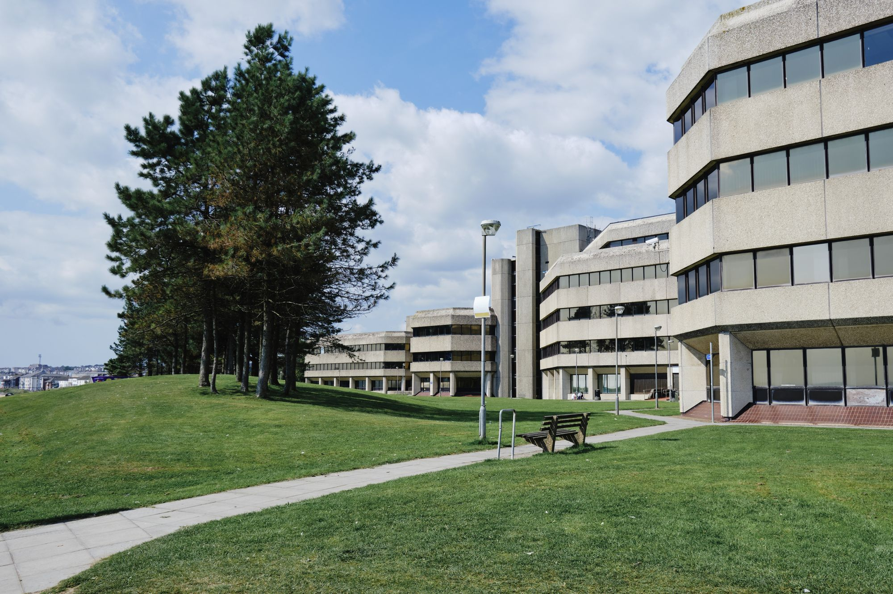

Ta’lim muhitini ifodalovchi fotoKelajagingizga
puxta poydevor.
Bilimingizni amaliy ko‘nikmaga aylantiring.
So‘x tuman texnikumi bilan kasb sari ilk qadamni qo‘ying.
Hayot uchun bilim va ko‘nikma.
aniq tanlovdan.Qabul haqida ma’lumot
Qiziqishingizni kasbga aylantiring.
Texnologiyadan ishlab chiqarishgacha —
o‘z yo‘lingizni tanlash shu yerdan boshlanadi.
i Yo‘nalishlar 2025/2026-yil rasmiy qabul hujjatlari asosida berilgan.
Joriy qabul shartlarini my.edu.uz portalida tekshiring.
Kasbga mehr.
Mahorat sari yo‘l,
shu yerdan boshlanadi.
So‘x tuman texnikumi — Farg‘ona viloyatining So‘x tumanidagi kasbiy ta’lim muassasasi. Bu yerda kasb tanlash, bilim olish va amaliy ko‘nikmalarni rivojlantirish bir maqsad atrofida birlashadi.
Bilim va amaliyot
Kasbni tushunishdan uni amalda qo‘llash sari.
Ongli kasb tanlovi
Qiziqish va maqsadlaringizga mos yo‘nalish.
Kelajakka tayyorgarlik
Mustaqil rivojlanish uchun mustahkam asos.
Siz tanlagan kasb.
Siz quradigan kelajak.
Qabulga tayyorgarlikni oddiy qadamlardan boshlang.
Amaldagi muddat va talablarni rasmiy portalda tekshiring.
Kerakli ma’lumot — bir joyda.
ishonchli manbalar, foydali yo‘riqnomalar.
Savolingiz bormi?
To‘g‘ri manbadan boshlang.
So‘x tumani
Aniq manzil va aloqa ma’lumotlarini rasmiy muassasalar xaritasidan tekshiring.